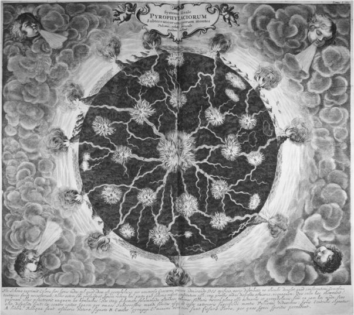
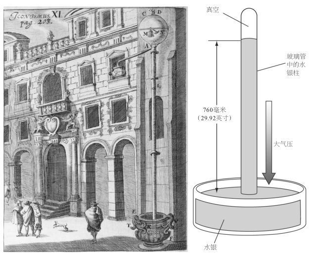
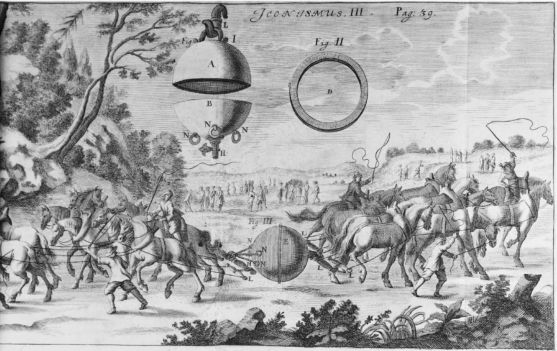
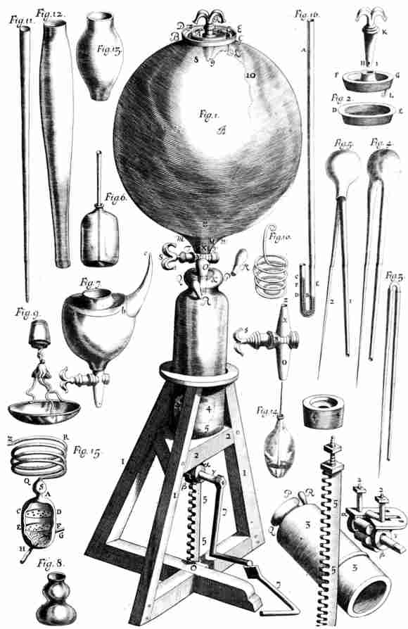

近代早期的许多自然哲学家都将目光投向了天空，但重新看待地界事物的自然哲学家更多。月下世界是地球以及土、水、气、火四元素的领域，是生灭变化的领域，是不断发生转变的动态世界。重元素（土和水）和重物自然落向宇宙的最低点，即静止的地球所处的宇宙中心。轻元素（气和火）则朝着月亮天球上升，后者是四元素的最高边界。于是，经由一种基于其重性或轻性的“自然运动”，每一种元素都在宇宙中找到了其“自然位置”。这种亚里士多德体系解释了为什么石头和雨水会下落，而烟却会上升，蜡烛的火焰总是朝上。而月上世界的情况则相反，天体是由第五元素构成的，第五元素非重非轻，既不上升也不下降，而是永远围绕地球作圆周运动。近代早期人重新考察了地球、元素以及变化和运动过程，提出了各种体系来理解事物。有些人明确表示打算取代亚里士多德主义世界观，另一些人则仅仅试图改进它，几乎没有人能够完全摆脱亚里士多德的影响。观察、实验和用新的概念来理解月下世界，这些努力并未造就唯一一种通向现代科学的世界观，而是创造出各种相互竞争的世界体系，它们在整个17世纪力争获得认可和占据主导地位。
地球
近代早期的自然哲学家认为，地球和宇宙其余部分一样，年龄只有数千年。所能找到的最古老的文本《圣经》所提供的年表将人类的谱系追溯到大约6000年前。虽然只有某些读者将《创世记》第一章解释为描述了包含创世六日的字面意义上的年表（圣奥古斯丁曾在公元5世纪拒绝接受这种对字句的拘泥），但没有人认真认为，人类出现以前的地球历史还可以往回追溯得更长。最长的估计是，创世大约发生于一万年前。这并非教条使然，而是根本没有证据让人不这样想。正是在尼尔斯·斯滕森（1638—1686，其拉丁化的名字尼古拉·斯泰诺更为人所熟知）的工作中，地质历史的观念出现了。斯泰诺出生在丹麦，他先是致力于解剖学，因其解剖技巧而闻名，并且用解剖技巧作出了唾液管（今天被称为“斯滕森氏管”）等重要发现。和当时其他许多自然哲学家一样，他游历于欧洲各大学术中心，与其他自然哲学家会面并交流新知。17世纪60年代，他在美第奇的赞助下定居于佛罗伦萨，开始对托斯卡纳山丘中的岩层——我们称之为“地层”——以及包裹于其中的贝壳感兴趣。他断言，这些岩层必定曾经是逐渐沉积下来的松软泥土，因此较低的岩层必定比较高者更为古老。他认为，某个地方的地层只要不是水平的，就必定是在硬化为石头后因某种剧变而发生破裂。这些结论并未使斯泰诺增加对地球年龄的估计，毕竟，泥土可以迅速硬化成砖块，但它们的确暗示，地球表面发生过巨大变化，而岩石中保存着这些变化的记录。
到了17世纪末，一些学者——特别是在英格兰——在斯泰诺工作的基础上编写了“地球的历史”来解释当时的地球样貌。他们大都援引全球灾难作为因果动因，在自然哲学的观念和观察资料中插入《圣经》记述和其他历史记载。托马斯·伯内特的《地球的神圣历史》（17世纪80年代）提出了六个地质时代，这六个时代被《圣经》所述的灾难性事件打断。牛顿的伙伴埃德蒙·哈雷和威廉·惠斯顿（1667—1752）提出，主要是彗星与地球相撞缔造了地球历史，导致了地轴倾斜和诺亚洪水这样的事情。
博学多才的耶稣会士基歇尔对地球表面的变化作了第一手的研究。1638年在西西里岛时，基歇尔见证了一次强烈地震和埃特纳火山的喷发。此前火山作用从未成为研究课题，这在很大程度上是因为欧洲大陆唯一的活火山维苏威火山已经沉寂了300多年，直到1631年突然剧烈喷发。基歇尔前往那里观察了持续的喷发，为了看得更清楚，他甚至下到了活跃的火山口。他观察到火山活动既摧毁了旧山脉，也形成了新山脉，使地貌产生了显著改变。他把火山的热归因于地下的硫、沥青和硝石（其结合近似于火药）的燃烧。他注意到，火和喷发出的熔岩的量太过巨大，不可能产生于山体本身，于是推测，火山必定是地球深处大火的通风口。因此他断言，地球不可能只是“大洪水过后由黏土和泥压在一起形成的，就像是一块奶酪”，而是有一种复杂的动态内部结构。他设想地球内部充满了通道和室（图8）。一些通道将火从火热的核心（他从未 在字面上将这个核心与地狱混为一谈）转到火山口，另一些通道则允许水通过，往往是从一个海洋流到另一个海洋。大量的水流经这些通道就产生了洋流和湍动。基歇尔收集了来源各异的材料，尤其是耶稣会传教士的报告，编写了他百科全书式的《地下世界》（1665），除其他各种内容外，其中包含了显示洋流、火山和海底通道可能位置的世界地图。

图8 基歇尔，《地下世界》（阿姆斯特丹，1665）对地球隐秘内部及其火山的理想化描绘。
基歇尔是对地球上最具戏剧性的事件进行观察，而吉尔伯特（1544—1603）则是在家中静静地做实验，以发现地球的另一种不可见特征。吉尔伯特是伊丽莎白一世的御医，他研究的是一种向来令人费解的物体——磁石。他的《论磁》（1600）一书考察了磁石的性质，详述了用它们所作的实验，并且区分了磁吸引力与摩擦后的琥珀临时具有的吸引稻草的能力。［对于后一现象，他用表示琥珀的希腊词ēlectron创造了“电”（electrical）这个词。］他的一些实验灵感来自马里古的皮埃尔在13世纪60年代所作的实验，但吉尔伯特的研究指向了一个新的目标。皮埃尔曾用球形磁石或天然磁石——带有天然磁性的磁铁矿——发现磁石有两极，并将其命名为北极和南极。同样用球形磁石，吉尔伯特观察到置于磁石之上的铁针会精确模仿地球上罗盘针的行为。因此他得出结论说，地球是一个巨大的磁石。它也有磁极，能像球形磁石一样吸引罗盘针。（以前有人认为罗盘指向北天 极而非地极）。简而言之，吉尔伯特用球形磁石作为地球的模型 ，通过类比推理，将球形磁石在实验过程中的现象外推到整个地球。
吉尔伯特的目标是巩固哥白尼的学说，后者使自然位置和自然运动的整个概念变得混乱。哥白尼让地球运动起来，在远离宇宙中心的地方绕轴自转和绕太阳公转，这引出了严重的物理问题。重物为什么会落到并非处于中心的地球上？是什么东西导致地球在旋转？哥白尼学说的支持者必须找到一种新物理学，从混乱中整理出秩序。一旦声称地球有磁极，吉尔伯特便强调这些磁极定义了一个真实的物理 轴。既然自然中的一切事物都有目的，吉尔伯特认为这个轴的目的是为地球的自转作准备。此外，地球的磁性为地球赋予了内在动力，一如磁石会使铁制物体移动。吉尔伯特所谓的地球的磁“灵魂”不仅会使罗盘针指向北方，而且会使行星绕轴转动。在此基础上，吉尔伯特提出了一种“磁哲学”，认为磁性遍布和主宰着宇宙。利用相似者互相吸引——自然魔法的“共感”——的原则，磁哲学试图表明地球上的物体被自然地引向地球，而月球上的物体被自然地引向月球，从而挽救被瓦解的“自然位置”。因此，无论地球在宇宙中处于何种位置，地球物体都将落向地球。在吉尔伯特的宇宙中，磁力既维持着月上世界也维持着月下世界的秩序，他的看法深深地影响了开普勒、牛顿等人。
地球上的运动
磁哲学试图解释物体为什么 下落，而伽利略则试图用数学描述物体如何 下落。他造出了斜面、摆和其他仪器来研究地界运动。他在被软禁期间写的《两门新科学》（1638）是他从16世纪90年代开始的运动研究的顶峰。伽利略发现，所有物体无论重量如何，都以相同速度下落，这与亚里士多德的说法相反。他用优雅的逻辑论证说，如果滚下斜面的球速度会增加，滚上斜面的球速度会减小，那么在水平面上——既不向上也不向下——滚动的球将会保持恒定的速度。由于地球上的“水平”面实际上是弯曲的地球表面，因此在完全抛光的地球表面上滚动的球将会永远围绕地球运转。运用此“思想实验”，伽利略既阐明了一种惯性原理（运动物体会持续运动下去，除非受到外部动因的作用），又把天界的永恒圆周运动带到了地球，这进一步削弱了月下世界与月上世界的区分。
从方法论上讲，伽利略忽略的东西与他关注的东西同样重要。他描述运动时从来也不关注什么东西 在运动，无论是一个球、一块铁还是一头牛。简而言之，他忽略了亚里士多德物理学所强调的物体的质 。伽利略注重的是它们的量 ，它们在数学上可抽象的性质。通过剥离物体的形状、颜色、构成等特征，伽利略对物体的行为作了理想化的数学描述。一个冷的、棕色的、用橡木制成的球，其下落与一个热的、白色的立方体锡罐的下落不会有任何不同。伽利略将两个物体都还原成了抽象的、脱离语境的、能用数学处理的东西。14世纪初，一批被称为“牛津计算者”的人已经开始把数学应用于运动。事实上，伽利略在《两门新科学》中阐述运动学时，就是从他们提出的一条定理开始的。然而，伽利略要走得更远，他将数学抽象与实验观察紧密联系了起来。他在做无数实验时，将空气阻力和摩擦看成了可以从理想数学行为中剔除出去的“缺陷”，而这些数学行为只有在思想中才能经验到。柏拉图也许会在一定程度上同意伽利略的观点，因为柏拉图所理解的世界不完美地遵循了创世所依据的永恒的数学样式（即使亚里士多德可能反对伽利略的观点）。伽利略援引基督教的“自然之书”意象说出了一句名言：“这本书，我指的是宇宙，……是用数学语言写成的，其符号是三角形、圆以及其他几何图形，没有它们的帮助，人类连一个字也读不懂。”伽利略主张把物理世界还原为数学抽象，并最终还原为公式和算法，这一技巧对新物理学的产生发挥了关键作用，是科学革命的一个显著特征。
值得注意的是，伽利略只满足于用数学来描述 运动，而不关心运动的原因 。伽利略工作的这个特征与亚里士多德科学有根本不同，对于后者而言，真正的知识是关于原因的知识。伽利略使用的方法与工程师类似，他更感兴趣的是描述和利用物体的行为 ，而不是原因 。在这一点上，伽利略得益于他所处的意大利北部的环境，那里工程学发达，有学识的工程师声名显赫（见第六章）。《两门新科学》明确表明了实用工程的重要性：书中的对话者见到了威尼斯造船厂的工程，并且讨论了梁的抗拉强度及其按比例的增加和减小——这些主题对于工程师和建筑师至关重要。伽利略早年在帕多瓦大学任教授时，依靠为力学和防御工事项目提供指导来补贴其微薄的大学薪水。他后来关于抛射体运动的研究表明，抛射体的路径是一条抛物线，我们往往首先认为这是他对运动物理学的贡献。这项研究所延续的是早先尼科洛·塔尔塔利亚（1499—1557）的研究。塔尔塔利亚是一位有学问的工程师，其写于1537年的《新科学》一书将数学应用于运动尤其是炮弹的运动，这一主题对于意大利一直战火不断的诸邦来说具有直接的现实意义。我们很容易使科学发展变得过于抽象和理性，而忘记了科学往往由紧迫的实际问题所驱动。
水和空气
出于工程用途，伽利略的追随者对水的研究引出了一系列重要发现。本笃会神父贝内代托·卡斯泰利（1577—1643）是伽利略的学生，也是伽利略在比萨大学数学教席的继任者。卡斯泰利致力于研究水力学和流体动力学，这些都是重要的实际问题，因为当时的意大利建有各种供水系统，包括运河、喷泉、灌溉、沟渠和下水道等等。由于需要把水从深处（例如从深井或矿山中）竖直抽出，人们发现虹吸管无法把水向上吸到大约34英尺以上的高度。17世纪40年代初，卡斯泰利在罗马大学的同事加斯帕罗·贝尔蒂（约1600—1643）尝试用实验来研究这个问题。在基歇尔等人的合作下，贝尔蒂拿了一根能够两端封闭的36英尺长的管子，将其下端竖直插入一盆水中（图9左）。他封闭了底阀，往管内灌满水，然后封闭顶部，打开底部。水开始流出，但是当管中水柱高度下降到34英尺时，水突然不流了。是什么使水悬浮在不高不低正好34英尺处呢？
卡斯泰利的学生埃万杰利斯塔·托里拆利（1608—1647）后来继承了伽利略所担任的美第奇宫廷数学家和哲学家一职，他设计了一种简单仪器，该仪器与贝尔蒂的管子类似，但更易操作。托里拆利拿了一根长约一码的玻璃管，将其一端密封，往其中灌满水银。把它的开口端倒着插入一盆水银（图9右），此时管中水银开始排出，当管内水银柱的高度约为30英寸时停止下降，这一高度约为水在贝尔蒂管中停留高度的1/14。值得注意的是，水银的密度约为水的14倍，这意味着悬在管中的任何液体的高度都直接取决于该液体的密度。利用早先对水的研究中所得出的液体平衡思想，托里拆利解释了这些结果，声称留在管中的液体重量被向下挤压着盆中液体的外部空气的重量所平衡。空气有重量这一想法与亚里士多德体系相冲突，因为亚里士多德认为空气没有重量。托里拆利不仅提出，我们“生活在空气元素之浩瀚海洋的底部”，而且提出他的仪器可以测量和监控空气重量的变化，这使他的仪器有了一个新的名称——气压计 （barometer），其字面意思是“重量测量仪”。

图9 贝尔蒂的水气压计。加斯帕·肖特，《工艺志》（纽伦堡，1664）；（右）托里拆利简化的水银气压计的示意图。
17世纪的一些最著名的实验都是为了探究托里拆利管所激起的想法。数学家和神学家布莱斯·帕斯卡（1623—1662）提出可以用一个精巧的实验来证明，是大气的重量使液体悬浮在管中；1647年，他的姐夫弗洛兰·佩里耶做了这个实验。依照帕斯卡的指导，佩里耶在多姆山（位于法国中部，距离他们家不远）山脚下的一个修道院花园准备了几根“托里拆利管”，然后带着一根管子爬到了山上3000多英尺高的地方，发现水银面降低了三英寸。而下山之后，水银又恢复了原来的高度。在海拔较高之处，下压的“空气的海洋”较少，挤压水银的空气重量减小，因此所能平衡的管中水银也较少。
马格德堡市长奥托·冯·盖里克（1602—1686）是自然哲学家，制造了许多奇妙的仪器，而且热衷于演示。他当着许多观众的面做了一个壮观的实验，即著名的“马格德堡半球”实验。他做了两个半球形的铜壳，其边缘可以严丝合缝地合在一起。他把两个铜壳合成一个球，然后打开安装在一个半球上的阀门，用他自己仿照水泵发明的一种设备将空气从球中抽出。接着关闭阀门，冯·盖里克表明连马队都无法将两个半球分开，因为空气重量将它们保持在了一起（图10）。最后打开阀门，空气涌入，冯·盖里克轻而易举就把两个半球掰开了。
但水银上方的空间或冯·盖里克的球体之中是什么呢？许多实验者认为其中什么都没有，是完完全全 的真空——这是一个在17世纪极具争议的话题。亚里士多德主义者和其他一些人声称真空是不可能的，他们的口号“自然憎恶真空”就反映了这一点。他们相信世界被物质完全充满，是一种实满 ，这似乎得到了一些自然现象的证实。他们认为，水银柱上方的空间中包含着空气或者从水银中挥发出来的某种更精细的蒸汽。有一些实验试图解决这个疑问，但并没有完全解决“真空论者”与“充实论者”之间的争论。声音无法传过空间，这表明传播声音所需的空气被移走了。但光可以传过去——光难道不是和声音一样，需要某种介质来传播吗？对于当时的人来说，科学史上经常被视为“里程碑”的实验很少拥有对现代人那样的说服力。实验，尤其是对结果的解释，是一件复杂而可能引起争议的事情，过去是如此，将来也是如此。

图10 冯·盖里克引人注目地表明，连马队都无法将一个抽出空气的中空球体拉开，这证明了大气的压力。加斯帕·肖特，《工艺志》（纽伦堡，1664）。
罗伯特·玻意耳（1627—1691）很快就加入了研究空气的行列。他是英国最富有的人的幼子，因此有充足的时间和资源去献身于实验，实验地主要是他姐姐在伦敦帕尔马尔街的寓所，他成年后主要在那里生活。玻意耳和他的许多同代人指出空气可以压缩，特别是，一定量的空气所受压力越大，体积就越小，这一关系后来被称为“玻意耳定律”，今天的化学课仍然会讲授它。1658年，玻意耳听说了冯·盖里克的空气泵，于是和天才的罗伯特·胡克制造了一个改良的空气泵。它能够将一个大玻璃球抽空，使人看到密封于其中的物体在空气抽出时发生的变化（图11）。
玻意耳将一个气压计（他可能是为托里拆利管而创造了这个词）密封在他的空气泵中，看到水银面随着空气被抽出而下降。他在空气泵中做了令人眼花缭乱的实验：从试图点燃火药、用手枪射击、听手表滴答作响，一直到测量猫、鼠、鸟、蛙、蜜蜂、毛虫等各种生物在没有空气的情况下能活多久。他还用燃烧的蜡烛在空气泵中做实验，指出火依赖于空气的量。
火：化学家的工具
近代早期之前，早已有人对火作为一种物质元素的地位提出了异议。在参与这些争论的人当中，炼金术士常把火用作主要工具来研究和控制物质及其转变。科学革命是炼金术的黄金时代。今天，“炼金术”往往意味着一意孤行地（徒劳地）制备黄金，这或多或少有些“魔法”意味，从而有别于化学。但在近代早期，“炼金术”和“化学”指的是一些同样的追求。今天的一些历史学家用古体拼写chymistry来指所有这些未分化的追求。制金是化学的一个关键要素，但并不涉及（现代意义上的）“魔法”，而是一种理论基础与我们不同的活动。流传下来的一些笔记记录了“炼金术士”的日常操作，往往显示出关于实验操作、文本解释、观察和理论表述方面的细致方法论。除了追求黄金，化学还包括更广泛地研究物质，生产药物、染料、颜料、玻璃、盐、香水和油等商品。物质生产与自然哲学思辨的结合是这门学科的一个核心特征，它于公元4世纪起源于希腊化时期的埃及，一直演变成今天的化学。

图11 玻意耳和胡克的空气泵。罗伯特·玻意耳，《关于空气弹性的物理——力学新实验》（牛津，1660）。
寻找一种方法把铅变成金并非只是一厢情愿。它基于一种理论，即认为金属是由“汞”和“硫”两种成分在地下生成的复合物。两者以正确的比例和纯度结合时就会形成金。如果没有足够的硫，就会产生银。过多的硫（一种干的易燃本原）会产生铁或铜，这表现于这些金属的易燃、坚硬和难熔。过多的汞（一种液体本原）会产生锡或铅——柔软易熔的金属。因此从理论上讲，嬗变不过是对两种成分的比例进行调整，使之符合它们在金中的比例。人们观察到，银矿石中含有一些金，铅矿石中含有一些银，这暗示嬗变是在地下自然发生的，成分不佳的复合金属被净化或“催熟”为更加稳定、成分更好的金属。问题是如何通过人工手段更快地实现这种转变。于是，制金者试图制备他们所谓的“哲人石”，这是一种引发嬗变的物质动因。据说一旦在实验室制备出来，少量哲人石几分钟之内就能把与之混合的熔化的贱金属变成金。许多文本都声称成功地实现了这个过程，追求嬗变的人力图对此进行重现。困难在于这些著作会故意保密——它的成分、过程甚至是理论都掩藏在暗号、封面名称、隐喻和往往怪异的图案标志背后（图12）。
炼金术的保密性部分源于手工活动，因为有必要将专利权保持为行业秘密。出于对货币贬值的恐惧，中世纪的法律禁止嬗变，这进一步加强了保密性。此外作者们还声称，他们的知识倘若落入坏人之手会很危险，而且这些知识是一种优越的知识，不能泄露给配不上它的人，因此需要保密。
英国人一直用“化学家”意指“药剂师”，这起源于近代早期，那时大多数化学家都至少把部分精力投入制药。把化学用于医药始于普罗旺斯的方济各会修士鲁庇西萨的约翰（1310—约1362），他提倡用从酒中蒸馏出来的酒精来制备药用提取物。把化学用于制药在整个15世纪迅速发展，最终在帕拉塞尔苏斯（1493—1541）这位具有传奇色彩的人物那里得到了最热情的拥护。帕拉塞尔苏斯批判了以希腊、罗马和阿拉伯的作者们为基础的传统医学，并且基于从直接观察到日耳曼民间信仰的各种来源提出了自己的体系。他提倡以化学为手段把几乎所有物质都转化成一种强大的药物，对制金他并没有什么兴趣。他的指导思想是，有害性质起因于原本健康的物质中的杂质，这就像罪恶和死亡污染了那个由上帝所造的、本质上美好的世界。化学利用蒸馏、发酵和其他实验室操作，提供了区分好坏、辨别良药与毒药的方法。帕拉塞尔苏斯还告诉我们，所有物质都是由汞、硫、盐这三种主要成分构成的，这是地界的三位一体，被称为“三要素”（tria prima ），反映了神的三位一体和人的三位一体本性——肉体、灵魂和精神。帕拉塞尔苏斯所谓的“炼金术”（spagyria ）过程力图将一种物质分成其三要素，并分别进行提纯，然后将其重新组合成一种“高贵”的原始物质，它的药力更强而且没有毒性。
图12 一则炼金术讽喻，描绘了金和银的提纯，这是制备哲人石的第一步。国王代表黄金；跳过坩埚（一种用来提纯金属的器皿）的狼代表辉锑矿，这种材料能与银和铜起反应，除去常与金混合的银和铜；女王代表银；老人代表铅，指用铅来提纯银的灰吹过程。《赫耳墨斯博物馆》（法兰克福，1678）。
但帕拉塞尔苏斯更进了一步：化学不仅是一种用来制药的工具，而且也是理解宇宙的关键。帕拉塞尔苏斯在16世纪末的追随者对其往往混乱的著作（有人传言他是酒醉时口授的）做了系统整理，提出了一种化学论（chymical）世界观，把几乎一切事物都设想成本质上化学的。雨水经过海洋、空中和陆地而完成的循环是一次大蒸馏。地下矿物的形成，植物的生长，生物的产生，消化、营养、呼吸和排泄等身体机能，这些都被视为本质上化学的。上帝本身没有变成柏拉图主义者所说的几何学家，而是变成了化学大师。上帝从原始的混沌中创造出一个有序的世界，就类似于化学家将普通材料萃取、提纯和转化为化学产品；上帝用火对世界进行末日审判，就类似于化学家用火把杂质从贵金属中清除出去。这种世界观甚至把人的最终命运看成化学的。人死后，灵魂和精神脱离肉体。物质性的肉体在坟墓中腐烂，直到全部死者复活时得到更新和转变，作为化学家的上帝将净化后的灵魂和精神重新注入其中，产生出一个荣耀的、永生的人，一如在帕拉塞尔苏斯所说的炼金术中，三要素从物质中分离，提纯后重新结合成一种“光彩夺目的”产物。
帕拉塞尔苏斯的学说吸引了众多追随者。1572年第一次看到新星的不久前，第谷还在实验室中根据帕拉塞尔苏斯的学说制备药品。后来，第谷在他的天文台城堡中建了一个实验室，旨在研究他所谓的“地界天文学”，即化学（所谓“上行下效”）。帕拉塞尔苏斯的风格具有反体制性（往往表达为痛骂古典学问、大学和执业医师），因此他的观点引发了激烈的争论，其追随者往往集中于体制外。事实上，整个化学在大多数时间都存在于传统的学术机构之外，地位很是尴尬。物理学和天文学从中世纪以降就是大学必须研究的科目，但化学直到18世纪才获得了学术地位。其中一个原因是，它无法夸耀其古典根源，无论是亚里士多德还是任何其他古代权威都没有写过化学论著，这一点不同于天文学、物理学、医学和生命科学。化学与商业和人工制品有密切关联，具有实用性，而且往往混乱不堪、艰苦费力、气味难闻，这些都使化学无法令人尊敬。然而，注重实用性的实验也意味着化学能够收集大量材料，认识它们的属性，掌握处理它们的能力。在整个17世纪，这些知识在商业上的重要性与日俱增，许多化学家因此走上了一条实业道路——有时是被王侯或其他主顾以及采矿业所雇佣，旨在提高产量或探索物质的嬗变；有时是独立工作，旨在为市场推出新的商品。不幸的是，化学仿造宝石和金属的能力以及关于制造黄金的说法为诈骗提供了可乘之机，导致人们普遍将化学与不道德的勾当联系起来。早在中世纪晚期，但丁就把化学家——“自然的模仿者”——与伪造者一道置于地狱的第八圈，后来，17世纪剧作家本·琼森在其《炼金术士》（1610）中也用弄虚作假的化学家及其贪婪的客户来增强喜剧效果。
17世纪的化学训练大都是在医学环境中进行的。在德国，约翰内斯·哈特曼（1568—1631）于1609年成为第一位化学医学 （chemiatria ）教授。授予他此项教职的马堡大学是黑森——卡塞尔公国的莫里茨王子新建（因此更能创新）的一所加尔文主义机构，莫里茨王子的宫廷资助了许多制金者、帕拉塞尔苏斯主义者和其他化学家。在法国，常规的化学教育开始于巴黎的国王花园（Jardin du Roi），这是一个旨在传播和研究药用植物的植物园。一系列讲师在花园基于面向公众的实验演示来讲授实用课程。私人讲师往往是药剂师，他们也讲化学课，比如尼古拉·莱默里就在其巴黎寓所内讲课，他的教科书《化学教程》（1675）成为畅销书。事实上，在法国和德国出版的数十本化学教科书确立了一种教学传统，弥补了化学在大学课程中的缺失。
化学的实用色彩并不意味着它没有对自然哲学理论作出重要贡献，事实恰恰相反。17世纪最重要的进展之一，即原子论的复兴，便是部分建基于化学观念和化学观察。13世纪末的一位被称为盖伯的拉丁炼金术士，已经用一种准微粒的物质理论来解释化学性质。例如，他设想金的“最微小部分”被紧紧挤在一起，其间不留空隙，从而解释了金的密度和耐腐蚀性。而铁的“最微小部分”排列得更为松散，留下的空隙使铁的重量更轻，并且为火和腐蚀剂进入铁、将其分解为铁锈提供了空间。后来的化学家继续发展稳定的微粒这一思想，并借此来解释他们观察到的现象。主流的亚里士多德主义者常常会拒斥这样的观念，因为他们声称，物质在结合后会失去自己的身份。但从事实际研究的化学家知道，他们往往可以在一系列转化的结尾恢复初始材料。例如化学家知道，用酸处理的银“消解”为一种清澈的同质液体，它可以自由地穿过滤纸。用盐处理时，该液体会析出一种重的白色粉末。如果把这种粉末与炭相混合，并且将其加热至赤热状态，就会重新获得原有重量的银。这个著名的实验表明，银自始至终都保持着自己的身份，尽管从外表上看似乎并非如此，尽管它被分解成了能够透过纸孔的看不见的小微粒。化学操作为这些“原子”提供了最好证据。
原子论和机械论
微粒物质观的化学传统与古代原子论的复兴相互交织。古希腊原子论始于公元前5世纪的留基伯和德谟克利特。他们设想了一个由不可分割的原子所构成的物质世界，原子在虚空中不断分散和聚集，其千变万化的组合导致了我们看到的所有变化。他们的思想大部分已经湮没于古代历史中。亚里士多德对其作了详细反驳。虽然伊壁鸠鲁（前341—前270）把原子论当作自己的道德哲学的基础，但是当伊壁鸠鲁主义因其无神论和享乐主义倾向（伊壁鸠鲁并无这两种意图）而不再受到青睐时，原子论一同遭到了抛弃。直到罗马人卢克莱修普及伊壁鸠鲁思想的长诗《物性论》于1417年被重新发现，原子论才得以复兴。但卢克莱修对原子论与无神论之间关联的强调，使他的著作最初无法得到认同。具有讽刺意味的是，伊壁鸠鲁原子论得以恢复名誉要归因于一位神父——伽桑狄（1592—1655）。伽桑狄否认原子是永恒的（只有上帝是永恒的）和自行移动的（是上帝使它们移动），主张人的灵魂是非物质的和不朽的，并且建立了一个全面的世界体系，把不可见的微粒及其运动用作基本的解释原则。他的体系以及其他类似的体系后来被称为“机械论哲学”。
机械论哲学认为，所有可感的性质和现象都源于不可见的物质微粒（有时也被称为原子、微粒，或径直称为粒子）的大小、形状和运动。严格的机械论哲学家坚持认为，万物都是由同一种“原料”构成的，我们所觉察到的各种物质和属性都是源于这种原料微粒的不同形状、大小和运动。与其重数量、轻性质的态度相一致，伽利略认为冷、热、颜色、气味和味道等大多数性质实际上并不存在，而只是微粒作用于我们感官的结果。对于伽利略以及后来的机械论哲学家而言，唯一真实的性质——第一 性质——是微粒的大小、形状和流动性。所有其他性质都是第 二 性质，它们只存在于感知者中，而不存在于被感知者中。在机械论哲学家看来，醋之所以显得酸，仅仅是因为尖且锐利的醋微粒刺痛了舌头。如果没有舌头，“酸”就没有任何意义。玫瑰显示为红色，仅仅是因为玫瑰的微粒以特定的方式改变了反射光，而改变后的光又作用于我们的眼睛。玫瑰之所以芳香，是因为玫瑰花散发出的微粒经由空气进入了我们的鼻子，在那里撞击嗅觉器官，由此产生的运动被输送到大脑，并被转换成一种气味的感觉。这种观点从根本上反对亚里士多德看待世界的方式，在亚里士多德的世界观中，可感性质实际存在于物体之中，对于解释物体的性质和效应起着至关重要的作用。
该体系在两种意义上是机械论的。首先，结果都是通过机械接触引起的，比如锤子砸到石头上，或者弹子球相互碰撞。超距作用或共感的力量在其中没有地位。其次，世界以及其中的物体——甚至是具有广泛影响的笛卡尔机械论哲学中的植物和动物——都被理解成机器 。机械论哲学家把世界比作一个复杂的钟表装置，就像当时巨大的机械钟，隐藏于其中的齿轮、重锤、滑轮和杠杆使外面的表针转动，钟鸣响，小铸像翩翩起舞、鞠躬致意，机械公鸡喔喔啼叫，一切都符合完美的秩序和规则性。“世界机器”（machina mundi ）一词的历史可以追溯到卢克莱修，一些中世纪作者用它来表达宇宙的复杂规律性，但对于那些作者而言，机器 的意思更像是框架或结构，表达的是天地万物各个部分的相互依存关系。而机械论哲学家却为这一图像赋予了一种自动机的含义，即某种人工的东西，但却机械地模仿一个生命体的活动。机械论观点反映了当时日益增长的技术能力，对世界的理解渐渐从活的生物模型变成了无生命的机器。这种观点甚至导致了对上帝本身的重新理解。上帝不再是一个几何学家、化学家或建筑师，而是越来越被看成一位机械师或钟表匠，一个对世界机器进行设计和组装的技师。这一形象在17世纪末的英格兰变得尤为根深蒂固，它构成了关于“智能设计”的现代讨论的基本背景。在近代早期，随着神学和自然哲学的彼此融合，科学概念和宗教概念一同发展和成熟起来，彼此发生影响，互相作出回应。
机械论哲学家力图用他们的原则来解释所有自然现象，一个棘手的问题是如何解释“隐秘性质”、共感和超距作用，它们曾使亚里士多德主义者感到沮丧，也是自然魔法的基础。机械论者所青睐的解决方案是诉诸一种不可见的物质流溢——是微粒“流”将影响从一个物体带到了另一个物体。例如，火之所以能够加热远距离处的物体，是因为快速移动的火微粒从火焰中散发出来并且击中了物体。其他解释则需要有更具创造性的解决方案。笛卡尔对磁吸引力的解释是，磁体发射出一种恒定的螺旋形微粒流。他假定铁含有螺旋形的孔洞，磁体发射出的微粒进入了铁的孔洞，在其中旋转，从而把铁“拧”得更靠近磁体。即使是看到血腥场面时不自觉地转头这一反射动作，也要通过尖的微粒流会伤害眼睛来解释。
玻意耳不仅提出了“机械论哲学”一词，而且特别把它与化学结合了起来，因为他认识到化学在揭示世界运作方面具有特殊能力。玻意耳的研究涉及17世纪化学的所有四个主要方面：制金、医药、商业和自然哲学。他热切地寻求着研制哲人石的秘密，并试图接触可能提供帮助的“秘密行家”。他声称目睹过哲人石的使用，验证过由铅生产出的金，并促使一部禁止金属嬗变的英国法律于1689年被废止。他收集了新的化学药品，特别是那些不太昂贵的、救济穷人的药品（和今天一样，那时的医疗护理和药品的价格也过高）。他还主张把化学用于实用目的，改进行业、贸易和制造。也许最有名的是，他宣扬化学是研究世界的最佳途径，并且努力提升化学的地位。玻意耳解释说，他之所以投身于被他的朋友们视为“一种空洞的欺骗性研究”的化学，是因为它为机械论哲学家所提出的微粒体系提供了最好的证据。例如他用实验表明，硝石可以产生一种不变的碱性盐和一种挥发性的酸性液体，两者结合会重新产生硝石。他的结论是，复合物质可以分成小块，这些小块一起还原会重新形成原先的物质，就像一台机器的零件。虽然玻意耳拒绝接受帕拉塞尔苏斯的大部分学说，但（他所谓的）这种“重新合并”与“炼金术”惊人地相似，事实上，玻意耳的想法正是以前面提到的那种历史悠久的制金和化学医学两种传统为基础的。
机械论哲学在17世纪末逐渐衰落。玻意耳变得不那么热衷于它，因为他意识到这一哲学的过度扩展可能会导致决定论、唯物论和无神论。假如世界仅仅是一些相互碰撞的微粒，那么自由意志或神意将没有位置。如果上帝是一个钟表匠，那么他是先开动世界然后对其不闻不问，还是如同一个拙劣的机械师，必须经常对其重新调整？化学家一直对严格的机械论哲学兴趣不大，因为他们平日里看到的大量属性似乎无法通过同一种物质不同形状的微粒这般贫乏的观念来解释。同样，生命过程过于复杂，超出一定限度便无法用简单的力学来解释。最后，牛顿所说的吸引力是一种超距作用，无法对其进行机械论解释。牛顿主义的胜利其实意味着严格机械论的失败。
不断演进的亚里士多德主义
亚里士多德和亚里士多德主义在本章已经多次出现。事实上，有一种关于科学革命的解释是，科学革命完全是对一种垂死的经院亚里士多德主义的拒斥。但这种观点没能认识到经院哲学的弹性和不断演进。17世纪各种“新”哲学的支持者经常用严厉的措辞讽刺和批判亚里士多德主义，但其他自然哲学家始终处于“亚里士多德主义”框架内，继续更新着系统，做着卓有成效的工作。无论在中世纪晚期还是在近代早期，“亚里士多德主义”或“经院哲学”都不意味着顽固地秉持亚里士多德本人所做的任何断言。即使是亚里士多德最伟大的学生特奥弗拉斯特，也是通过在一些观点上不同意亚里士多德的看法而延续着亚里士多德传统。在中世纪，自然哲学家普遍引述亚里士多德，但经常只是作为自己研究的一个出发点，所得出的结论往往与亚里士多德的结论相反。到了文艺复兴时期，存在着许多不同的甚至是相互冲突的亚里士多德主义。
自然哲学的实验进路和数学进路并非亚里士多德本人工作的关键部分，但对于17世纪的亚里士多德主义者来说，它们变得越来越重要。耶稣会士是明确致力于坚持一种亚里士多德主义自然哲学的最明显例子，但里乔利和格里马尔迪等许多耶稣会士都做了与伽利略运动学有关的大量实验，而且把一些明显与亚里士多德相矛盾的观念和发现包括进来。同样，耶稣会士尼科洛·卡贝奥（1586—1650）拒绝接受吉尔伯特关于其磁学实验支持了哥白尼这一解释，但卡贝奥自己也做了大量磁学实验。到了17世纪末，耶稣会士已经在一种“亚里士多德主义”框架中采用了伽桑狄和笛卡尔所阐述的许多机械论观点。在其支持者看来，经院哲学仍然是一种有用而灵活的自然研究方法 。他们虽然对17世纪的许多创新持保守态度，但仍然是科学革命的积极参与者和贡献者。
在科学革命过程中，亚里士多德主义的确遭遇了截然不同的强劲的竞争对手，这是在中世纪晚期没有遇到过的。在整个近代早期，新的世界观——磁的、化学论的、数学的、自然魔法的、机械论的，等等——均作为挑战者和貌似合理的替代品而出现，而经院哲学则力图将新的材料和观念吸收到一种“亚里士多德主义”框架中。不同世界体系的捍卫者之间的持续争论不仅引出了各种论战技巧，而且引出了对如何建立一种新的、最好是全面的自然哲学这一紧迫挑战的大量不拘一格的回应。从我们现代的角度来看，很难想象近代早期会发展出如此众多关于基本问题和方法的不同观点和进路，也很难想象越来越多的自然哲学家会以如此的热忱富有成果地探索他们的世界，并且设计出大大小小的体系来尝试理解所有这一切。16、17世纪之所以的确是“革命性的”，这是一个重要原因。